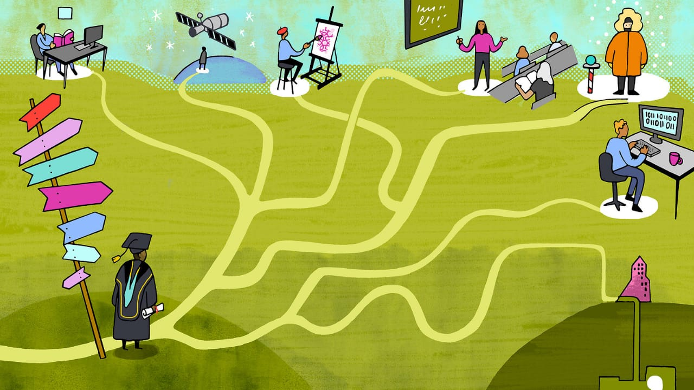

Essay
Constant Phone Glancing and Other Maladies
Essay · 2020
A short reflection on compulsive phone checking, fractured attention, and the habits that quietly reshape how we think and work.
Notes on robotics, learning, and attention.

Essay · 2020
A short reflection on compulsive phone checking, fractured attention, and the habits that quietly reshape how we think and work.